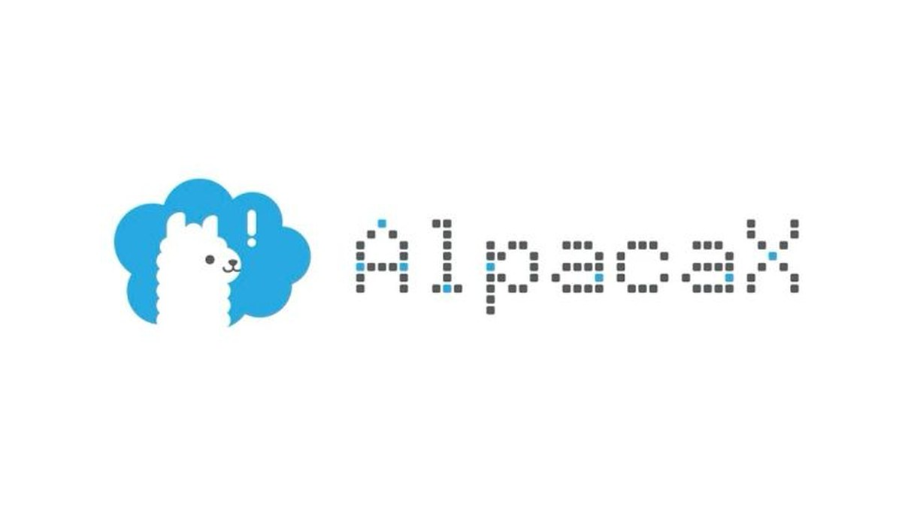
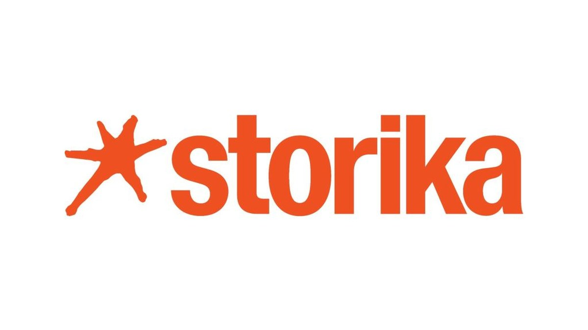
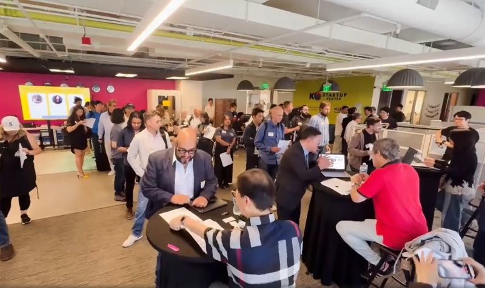
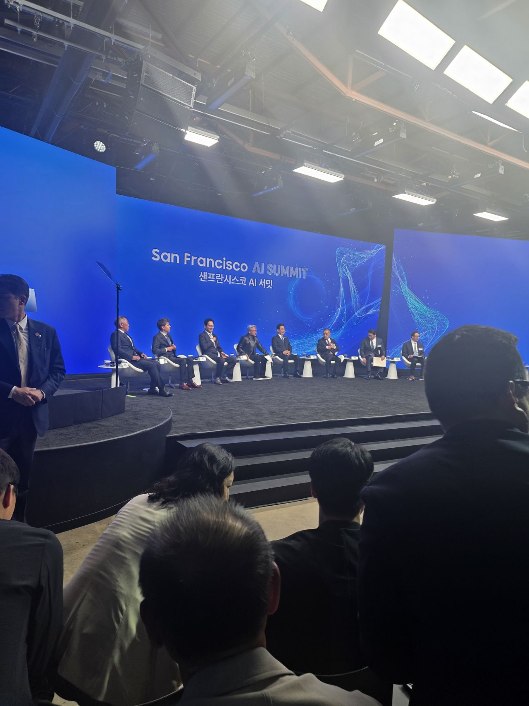

Where we have been showing up
Portfolio announcements, events and press, most recent first.
Portfolio AI Investment Summit & Demo Day, Silicon ValleyRabbit Ventures attended the two-day AI Investment Summit and Demo Day at Plug and Play Tech Center in Sunnyvale, a curated event featuring speakers from BlackRock, Pear VC, TikTok, Google, and Replit with over $14 trillion in AUM represented on stage.Event
AI Investment Summit & Demo Day, Silicon ValleyRabbit Ventures attended the two-day AI Investment Summit and Demo Day at Plug and Play Tech Center in Sunnyvale, a curated event featuring speakers from BlackRock, Pear VC, TikTok, Google, and Replit with over $14 trillion in AUM represented on stage.Event Israel Innovation Summit, RSA 2026Rabbit Ventures attended the Global Israel Innovation Summit held during RSA Conference week, holding one-on-one meetings with Israeli cybersecurity founders, including those from AI security and autonomous-agent defense companies.Event
Israel Innovation Summit, RSA 2026Rabbit Ventures attended the Global Israel Innovation Summit held during RSA Conference week, holding one-on-one meetings with Israeli cybersecurity founders, including those from AI security and autonomous-agent defense companies.Event Korean Startups & Funders Meetup in SeattleRabbit Ventures co-hosted a meetup with K-Startup Center Seattle for Korean founders, investors, funders, accelerators, and ecosystem partners interested in the U.S.-Korean startup corridor.Press
Korean Startups & Funders Meetup in SeattleRabbit Ventures co-hosted a meetup with K-Startup Center Seattle for Korean founders, investors, funders, accelerators, and ecosystem partners interested in the U.S.-Korean startup corridor.Press Desert Rose 2026 Scene #1: Déjà Vu & EvolutionA Brunch article documented the second Desert Rose Workation, describing how Rabbit Ventures refined the program from the previous year and positioned it as a denser execution-focused gathering for portfolio founders.Event
Desert Rose 2026 Scene #1: Déjà Vu & EvolutionA Brunch article documented the second Desert Rose Workation, describing how Rabbit Ventures refined the program from the previous year and positioned it as a denser execution-focused gathering for portfolio founders.Event Desert Rose 2026 Workation RecapRabbit Ventures spent two weeks with portfolio companies in an isolated Southern Utah house, focused on founder-to-founder product feedback, onboarding, lead generation, marketing, fundraising, and peer learning.Event
Desert Rose 2026 Workation RecapRabbit Ventures spent two weeks with portfolio companies in an isolated Southern Utah house, focused on founder-to-founder product feedback, onboarding, lead generation, marketing, fundraising, and peer learning.Event AsiaStartupExpo Q3 2025: Virtual Pitches Turn into Real OpportunitiesKoreaTechDesk covered AsiaStartupExpo Q3 2025 and listed Rabbit Ventures among the global investor panel that evaluated startups and offered real-time feedback.Event
AsiaStartupExpo Q3 2025: Virtual Pitches Turn into Real OpportunitiesKoreaTechDesk covered AsiaStartupExpo Q3 2025 and listed Rabbit Ventures among the global investor panel that evaluated startups and offered real-time feedback.Event AsiaStartupExpo Q3 2025: Connecting Asian Startups with Global InvestorsKoreaTechDesk announced AsiaStartupExpo Q3 2025 and named Rabbit Ventures as one of the investor judges for the virtual startup pitch forum.Event
AsiaStartupExpo Q3 2025: Connecting Asian Startups with Global InvestorsKoreaTechDesk announced AsiaStartupExpo Q3 2025 and named Rabbit Ventures as one of the investor judges for the virtual startup pitch forum.Event Investor Judges for AsiaStartupExpo Q3 2025AsiaTechDaily profiled the investor judges for AsiaStartupExpo Q3 2025, including Rabbit Ventures as a fund focused on mentoring and funding early-stage founders.Event
Investor Judges for AsiaStartupExpo Q3 2025AsiaTechDaily profiled the investor judges for AsiaStartupExpo Q3 2025, including Rabbit Ventures as a fund focused on mentoring and funding early-stage founders.Event Cybersecurity CEO Reunion at Black Hat 2025Rabbit Ventures attended the cybersecurity CEO reception co-hosted by AllegisCyber Capital, J.P. Morgan, and DataTribe during Black Hat USA 2025, joining 190+ cybersecurity industry leaders. The event was covered by Cybersecurity Dive and Nextgov.Event
Cybersecurity CEO Reunion at Black Hat 2025Rabbit Ventures attended the cybersecurity CEO reception co-hosted by AllegisCyber Capital, J.P. Morgan, and DataTribe during Black Hat USA 2025, joining 190+ cybersecurity industry leaders. The event was covered by Cybersecurity Dive and Nextgov.Event Changbal Innovation Hack 2025 JudgeRabbit Ventures was listed as a judge for Changbal Innovation Hack 2025, with the General Partner role represented on the published judging panel.Press
Changbal Innovation Hack 2025 JudgeRabbit Ventures was listed as a judge for Changbal Innovation Hack 2025, with the General Partner role represented on the published judging panel.Press Desert Rose Workation Journal #1: Why Founders Went to the DesertA Brunch article introduced Rabbit Ventures’ Desert Rose Workation, explaining the program’s goal of helping founders focus on essential problems and vision in an isolated environment.Event
Desert Rose Workation Journal #1: Why Founders Went to the DesertA Brunch article introduced Rabbit Ventures’ Desert Rose Workation, explaining the program’s goal of helping founders focus on essential problems and vision in an isolated environment.Event Desert Rose 2025 Workshop Reflection by PhyxUp HealthRabbit Ventures reposted Sangwon Lim’s reflection on the Desert Rose 2025 workshop, describing it as a two-week workation bringing together LPs, mentors, and founders for growth strategy, connections, and founder development.Event
Desert Rose 2025 Workshop Reflection by PhyxUp HealthRabbit Ventures reposted Sangwon Lim’s reflection on the Desert Rose 2025 workshop, describing it as a two-week workation bringing together LPs, mentors, and founders for growth strategy, connections, and founder development.Event Rabbit VC Desert Rose Workation Day 7Rabbit Ventures shared a day-seven update from the Desert Rose Workation, noting that the photos did not capture the five startup teams working almost nonstop on their laptops.Press
Rabbit VC Desert Rose Workation Day 7Rabbit Ventures shared a day-seven update from the Desert Rose Workation, noting that the photos did not capture the five startup teams working almost nonstop on their laptops.Press South Korea’s Top Startups Impress Silicon Valley Investors at the 2024 Gangnam Global RoadshowKoreaTechDesk covered the 2024 Gangnam Global Roadshow in Menlo Park and quoted Rabbit Ventures advising Korean startups to spend less time preparing and more time engaging directly with U.S. customers.Event
South Korea’s Top Startups Impress Silicon Valley Investors at the 2024 Gangnam Global RoadshowKoreaTechDesk covered the 2024 Gangnam Global Roadshow in Menlo Park and quoted Rabbit Ventures advising Korean startups to spend less time preparing and more time engaging directly with U.S. customers.Event Korea Pavilion Networking Reception at TechCrunch Disrupt 2024Rabbit Ventures attended the Korea Pavilion Networking Reception at TechCrunch Disrupt 2024 in San Francisco, hosted by KOTRA Silicon Valley, connecting with Korean startups and investors at SPIN SF.Event
Korea Pavilion Networking Reception at TechCrunch Disrupt 2024Rabbit Ventures attended the Korea Pavilion Networking Reception at TechCrunch Disrupt 2024 in San Francisco, hosted by KOTRA Silicon Valley, connecting with Korean startups and investors at SPIN SF.Event X-Hub Tokyo-Singapore Demo DayRabbit Ventures was invited to the Collaborative Futures: X-Hub Tokyo-Singapore virtual Demo Day hosted by e27, showcasing top Japanese startups expanding into Singapore.Event
X-Hub Tokyo-Singapore Demo DayRabbit Ventures was invited to the Collaborative Futures: X-Hub Tokyo-Singapore virtual Demo Day hosted by e27, showcasing top Japanese startups expanding into Singapore.Event Rabbit Ventures 2024 Annual General MeetingRabbit Ventures held its first annual general meeting, marking a milestone for the fund with LPs and portfolio startups participating.Speaking
Rabbit Ventures 2024 Annual General MeetingRabbit Ventures held its first annual general meeting, marking a milestone for the fund with LPs and portfolio startups participating.Speaking Asia Bridge Summit Taiwan Speaker AnnouncementRabbit Ventures was listed as a speaker for Asia Bridge Summit Taiwan in connection with the AsiaBridge and Global PoC Program.Event
Asia Bridge Summit Taiwan Speaker AnnouncementRabbit Ventures was listed as a speaker for Asia Bridge Summit Taiwan in connection with the AsiaBridge and Global PoC Program.Event RSA Cyber Future Breakfast & Live Pitch, RSA 2023Rabbit Ventures attended the RSA Cyber Future Breakfast & Live Pitch event hosted by Elron Ventures during RSA Conference 2023 in San Francisco, connecting with cybersecurity founders and investors.
RSA Cyber Future Breakfast & Live Pitch, RSA 2023Rabbit Ventures attended the RSA Cyber Future Breakfast & Live Pitch event hosted by Elron Ventures during RSA Conference 2023 in San Francisco, connecting with cybersecurity founders and investors.

New in the Portfolio: AlpacaXRabbit Ventures invested in AlpacaX, which gives AI agents and teams safe, scoped access to production infrastructure. Its Alpacon platform provides command-level control, Slack-based approvals, and full audit trails, so agents can debug, deploy, and maintain within defined bounds.Portfolio
New in the Portfolio: StorikaRabbit Ventures invested in Storika, an AI-powered creator marketing platform for D2C brands. Its agents run discovery across more than 7 million creator profiles, then handle outreach, negotiation, shipment tracking, and post verification end to end.Event
Global Founders Speed Pitch, Seattle Tech Week 2026Rabbit Ventures took part in the Global Founders Speed Pitch during Seattle Tech Week 2026, a full-capacity event hosted by K-Startup Center Seattle where founders from Korea and beyond pitched investors one-on-one and explored partnerships for entering the U.S. market. Ryan Lee of Rabbit Ventures helped prepare the event alongside the K-Startup Center Seattle team, with Aviram Jenik and MJ Kang among the participating investors.Event
San Francisco AI SummitRabbit Ventures General Partner Aviram Jenik was invited to the San Francisco AI Summit, chaired by Korean President Lee Jae Myung and joined by Nvidia CEO Jensen Huang, Samsung Chairman Lee Jae-yong, OpenAI CEO Sam Altman, and chief executives from Hyundai, SK, Broadcom, Anthropic, and Naver. Discussion centered on Korea’s place in the AI era and what the shift opens up for early-stage founders.EventAI Investment Summit & Demo Day, Silicon ValleyRabbit Ventures attended the two-day AI Investment Summit and Demo Day at Plug and Play Tech Center in Sunnyvale, a curated event featuring speakers from BlackRock, Pear VC, TikTok, Google, and Replit with over $14 trillion in AUM represented on stage.EventIsrael Innovation Summit, RSA 2026Rabbit Ventures attended the Global Israel Innovation Summit held during RSA Conference week, holding one-on-one meetings with Israeli cybersecurity founders, including those from AI security and autonomous-agent defense companies.EventKorean Startups & Funders Meetup in SeattleRabbit Ventures co-hosted a meetup with K-Startup Center Seattle for Korean founders, investors, funders, accelerators, and ecosystem partners interested in the U.S.-Korean startup corridor.PressDesert Rose 2026 Scene #1: Déjà Vu & EvolutionA Brunch article documented the second Desert Rose Workation, describing how Rabbit Ventures refined the program from the previous year and positioned it as a denser execution-focused gathering for portfolio founders.EventDesert Rose 2026 Workation RecapRabbit Ventures spent two weeks with portfolio companies in an isolated Southern Utah house, focused on founder-to-founder product feedback, onboarding, lead generation, marketing, fundraising, and peer learning.EventAsiaStartupExpo Q3 2025: Virtual Pitches Turn into Real OpportunitiesKoreaTechDesk covered AsiaStartupExpo Q3 2025 and listed Rabbit Ventures among the global investor panel that evaluated startups and offered real-time feedback.EventAsiaStartupExpo Q3 2025: Connecting Asian Startups with Global InvestorsKoreaTechDesk announced AsiaStartupExpo Q3 2025 and named Rabbit Ventures as one of the investor judges for the virtual startup pitch forum.EventInvestor Judges for AsiaStartupExpo Q3 2025AsiaTechDaily profiled the investor judges for AsiaStartupExpo Q3 2025, including Rabbit Ventures as a fund focused on mentoring and funding early-stage founders.EventCybersecurity CEO Reunion at Black Hat 2025Rabbit Ventures attended the cybersecurity CEO reception co-hosted by AllegisCyber Capital, J.P. Morgan, and DataTribe during Black Hat USA 2025, joining 190+ cybersecurity industry leaders. The event was covered by Cybersecurity Dive and Nextgov.EventChangbal Innovation Hack 2025 JudgeRabbit Ventures was listed as a judge for Changbal Innovation Hack 2025, with the General Partner role represented on the published judging panel.PressDesert Rose Workation Journal #1: Why Founders Went to the DesertA Brunch article introduced Rabbit Ventures’ Desert Rose Workation, explaining the program’s goal of helping founders focus on essential problems and vision in an isolated environment.EventDesert Rose 2025 Workshop Reflection by PhyxUp HealthRabbit Ventures reposted Sangwon Lim’s reflection on the Desert Rose 2025 workshop, describing it as a two-week workation bringing together LPs, mentors, and founders for growth strategy, connections, and founder development.EventRabbit VC Desert Rose Workation Day 7Rabbit Ventures shared a day-seven update from the Desert Rose Workation, noting that the photos did not capture the five startup teams working almost nonstop on their laptops.PressSouth Korea’s Top Startups Impress Silicon Valley Investors at the 2024 Gangnam Global RoadshowKoreaTechDesk covered the 2024 Gangnam Global Roadshow in Menlo Park and quoted Rabbit Ventures advising Korean startups to spend less time preparing and more time engaging directly with U.S. customers.EventKorea Pavilion Networking Reception at TechCrunch Disrupt 2024Rabbit Ventures attended the Korea Pavilion Networking Reception at TechCrunch Disrupt 2024 in San Francisco, hosted by KOTRA Silicon Valley, connecting with Korean startups and investors at SPIN SF.EventX-Hub Tokyo-Singapore Demo DayRabbit Ventures was invited to the Collaborative Futures: X-Hub Tokyo-Singapore virtual Demo Day hosted by e27, showcasing top Japanese startups expanding into Singapore.EventRabbit Ventures 2024 Annual General MeetingRabbit Ventures held its first annual general meeting, marking a milestone for the fund with LPs and portfolio startups participating.SpeakingAsia Bridge Summit Taiwan Speaker AnnouncementRabbit Ventures was listed as a speaker for Asia Bridge Summit Taiwan in connection with the AsiaBridge and Global PoC Program.EventRSA Cyber Future Breakfast & Live Pitch, RSA 2023Rabbit Ventures attended the RSA Cyber Future Breakfast & Live Pitch event hosted by Elron Ventures during RSA Conference 2023 in San Francisco, connecting with cybersecurity founders and investors.